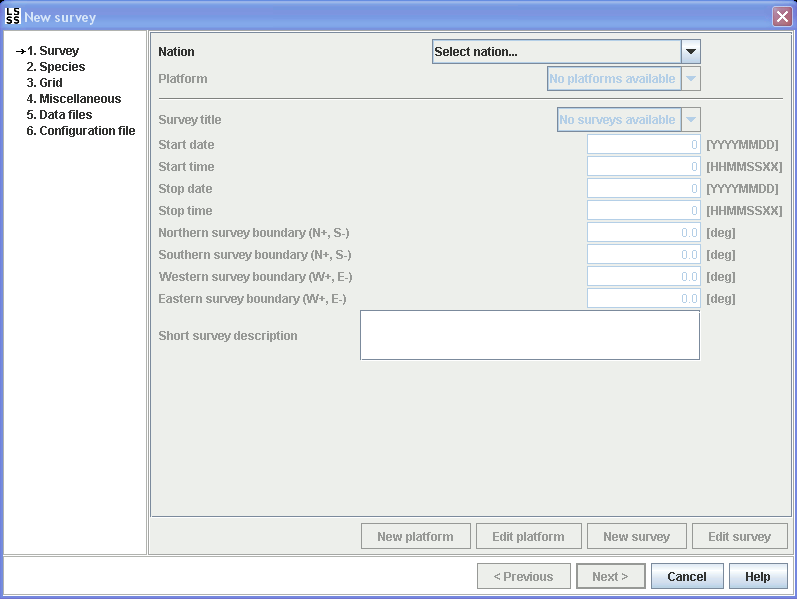

A new survey can be configured by selecting New survey... item in the File menu. A survey configuration wizard will then appear, as a guide through the configuration.

Refer to the sections in the survey configuration chapter for explanation of the elements in the wizard: